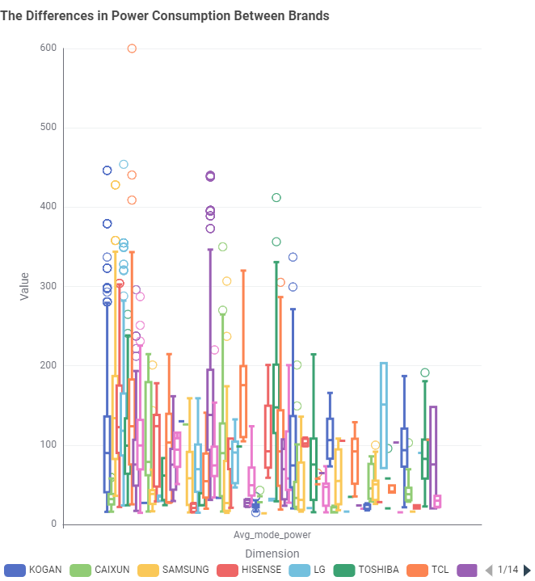

📺 Televisions
There are different types of TV screens, and some use more energy than others. LED is the most common display technology today. These TVs use a liquid crystal display (LCD) with light-emitting diodes (LED) for backlighting. More recently, organic light-emitting diode (OLED) TVs have appeared. Unlike LED TVs, OLED screens create their own light without backlighting. This is the same technology used in many modern smartphones.
Comparison
This section shows findings from the Australian Government’s dataset on the energy consumption of televisions sold in Australia. Our website makes it simple to compare TVs, helping Australians choose the right size and energy-efficient model for their needs.
What type of TV screen technologies are currently available in Australia?
The most common screen technology is LCD (LED), while OLED is the least common.
What screen sizes are currently available, and which are the most frequent?
The most popular screen size is 55 inches.
Which brands have the greatest number of different models?
Samsung, Kogan, and LG have the largest variety of TV models in Australia.
Which type of screen technology consumes the least amount of power?
LCD TVs use the least amount of power, while OLED TVs consume the most.
Relationship between screen size and power use
As screen size increases, TVs generally use more power.
Relationship between star rating and screen size

Among the data, 75-inch TVs achieved the highest star rating, averaging 8.87 stars.
Are there differences in power consumption between brands?

Different brands consumes varying power.